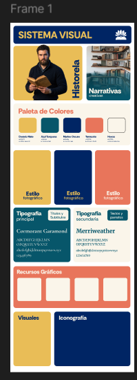
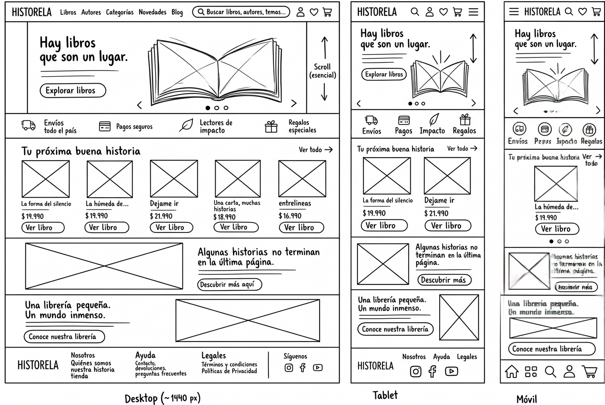
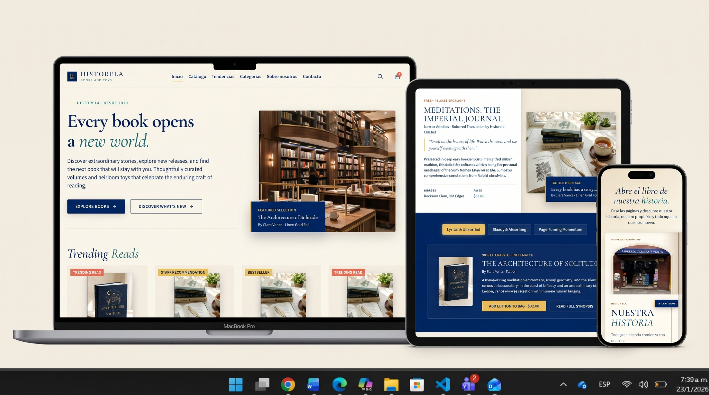
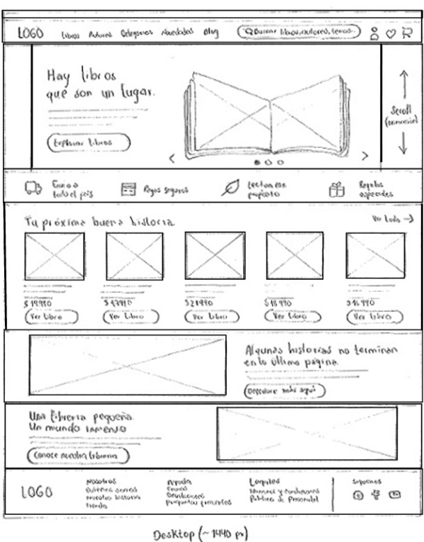
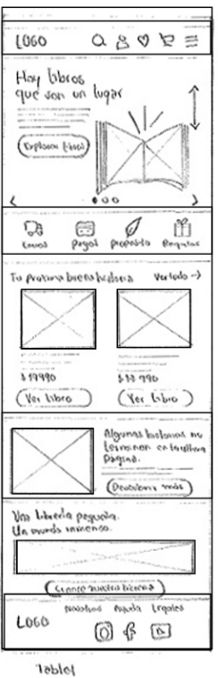
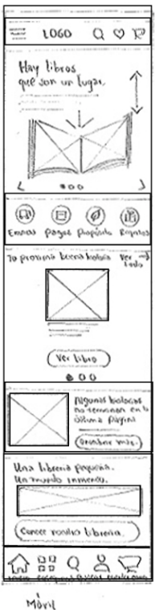
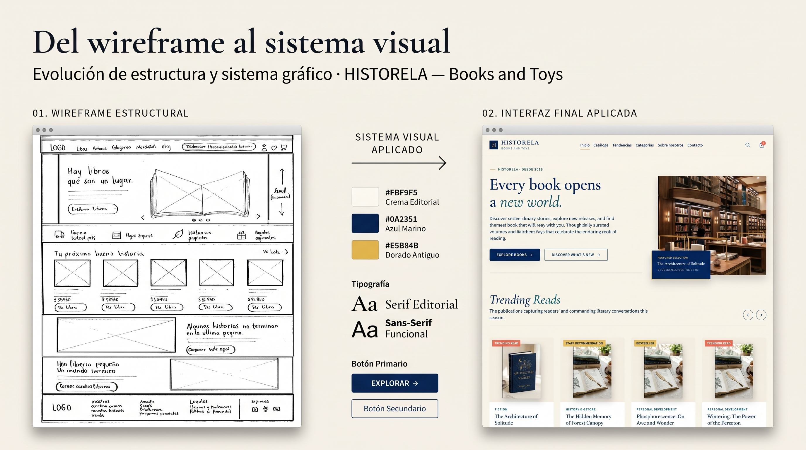

Encontrar rápido
- Buscador protagonista
- Categorías extensas
- Recomendados y más vendidos
- Precio y disponibilidad visibles
Aprendizaje: priorizar búsqueda sin replicar su densidad comercial.
PRODUCCIÓN MULTIMEDIA · UX/UI · DESARROLLO
Del benchmark y el brief al sistema visual, sketches, wireframes, mockups y desarrollo final de HISTORELA.
Investigación · Identidad · UX/UI · Desarrollo
PUNTO DE PARTIDA
HISTORELA nació en 2019 como un proyecto familiar en Suba, Bogotá. El reto fue llevar esa cercanía al entorno digital sin convertir la experiencia en una tienda genérica.
La oportunidad: combinar utilidad comercial con una narrativa editorial propia.
BENCHMARK
Aprendizaje: priorizar búsqueda sin replicar su densidad comercial.
Aprendizaje: ofrecer exploración además de búsqueda.
Aprendizaje: convertir recomendaciones en contenido editorial.
ESTRATEGIA
Facilitar la exploración y presentar la oferta sin perder el carácter familiar.
Personas que buscan libros, juegos, regalos y nuevas historias.
Creativa, familiar, accesible y en evolución.
Navegar con claridad y recordar la identidad de HISTORELA.
CONCEPTO GRÁFICO
La interfaz toma recursos del universo editorial: páginas, capítulos, marcapáginas, lomos, papel y transiciones inspiradas en pasar una hoja.
SISTEMA VISUAL REAL

El tablero real consolida la paleta cromática, estilos fotográficos, tipografías, iconografía y recursos gráficos usados como base del prototipo.
IDEACIÓN REAL

ARQUITECTURA RESPONSIVE
La fotografía del sketch se segmentó para presentar con claridad cómo cambia la composición entre escritorio, tablet y celular.




ALTA FIDELIDAD

El siguiente paso será reemplazar este mockup conceptual por la captura final exportada del prototipo cuando esté disponible como archivo separado.
DECISIÓN DESTACADA
Historia, Propósito, Misión, Visión y Valores funcionan como capítulos. La información institucional se convierte así en una experiencia coherente con el universo de una librería.
Probar interacción ↗Toda gran historia comienza con una idea.
Libros, creatividad y encuentros.
IMPLEMENTACIÓN
Estructura semántica y contenido.
Sistema responsive y componentes visuales.
Interacciones, estados y comportamiento.
Interacciones, estados y comportamiento.
PÁGINA PUBLICADA
Investigación → Brief → Concepto → Identidad → Sketch → Wireframe → Mockup → Desarrollo → HISTORELA.
Explorar HISTORELA ↗APRENDIZAJE
HISTORELA no necesitaba parecer una gran cadena. Necesitaba sentirse como HISTORELA.Volver al inicio ↑